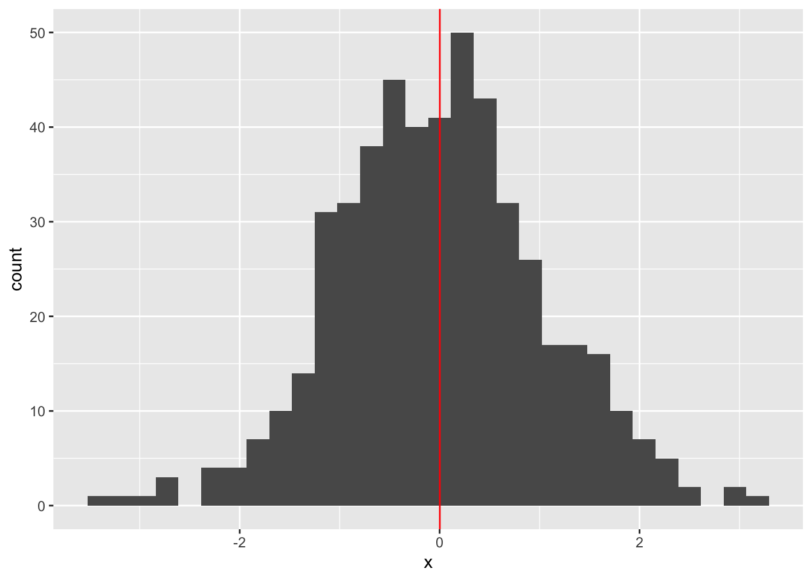
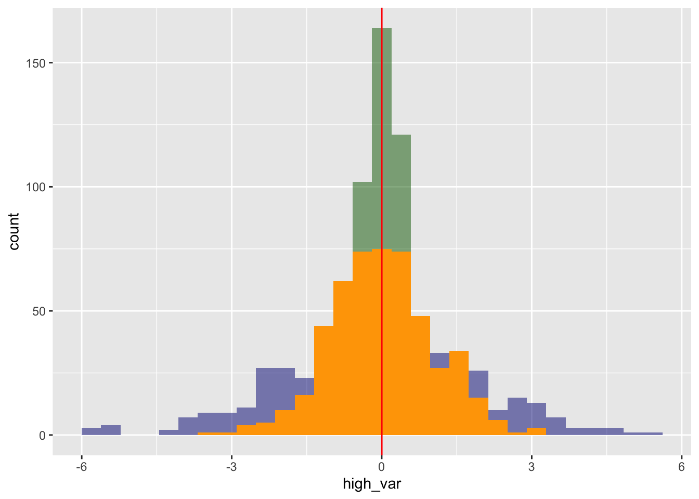

Intro to Greek Notation and Univariate Descrpitive Statistics
What is going on with all those Greek letters?
For most people, one of the most challenging parts about learning data analysis and quantitative methods is getting used to all of the complicated notation. This is perfectly understandable: math notation uses Greek (literally a different language than English) and combines it with math!
While the learning curve is steep, you will eventually get more comfortable consuming Greek notation. In this tutorial, I’ll walk through some of the most common symbols you’ll encounter and illustrate them with the univariate descriptive statistics that you’ll need to know.
Mean (a.k.a first population moment) (a.k.a expected value)
Mean, which is one measure of the “average” or central tendency of a set of values, is calculated by summing all of your values and dividing by the total number of values that you have. This should be pretty familiar for you, you likely know intuitively that the average of \(1 + 2 + 3 = 2\).
Shown below is how this looks in code. I first generate 500 random values and store them as a column in a dataframe. Then, I print the mean of that column. Last, I create a histogram of the values and show the mean wtih a red line.
library(tidyverse)
── Attaching core tidyverse packages ──────────────────────── tidyverse 2.0.0 ──
✔ dplyr 1.1.4 ✔ readr 2.1.5
✔ forcats 1.0.0 ✔ stringr 1.5.1
✔ ggplot2 3.5.2 ✔ tibble 3.3.0
✔ lubridate 1.9.4 ✔ tidyr 1.3.1
✔ purrr 1.1.0
── Conflicts ────────────────────────────────────────── tidyverse_conflicts() ──
✖ dplyr::filter() masks stats::filter()
✖ dplyr::lag() masks stats::lag()
ℹ Use the conflicted package (<http://conflicted.r-lib.org/>) to force all conflicts to become errors
set.seed(1234)# simulate 500 values and store as a vector in a dataframedf <-data.frame(x =rnorm(500))# print the meanmean(df$x)
[1] 0.001838821
# graph the histogram and show the mean line (in red)df %>%ggplot() +geom_histogram(aes(x = x)) +geom_vline(aes(xintercept =mean(x)), color ="red")
`stat_bin()` using `bins = 30`. Pick better value with `binwidth`.

We simulated data from the “standard normal” distribution (don’t worry about what that means yet), which by definition has a mean of 0–and you can see that we are finding a mean of close to zero! And, indeed, if we do the basic “add up all the values and divide by the number of values”, you’ll get the same value:
sum_x =sum(df$x)sum_x /length(df$x)
[1] 0.001838821
What does this look like in Greek notation? Let’s take a look:
\[\mathbb{E}[X] = \frac{\sum_{i=1}^n X_i}{n}\]
Despite the fact that you’re probably comfortable with the concept of mean, there are a lot of symbols here to describe that concept. It can be daunting! But we can break it down and show that it really isn’t that bad.
\(\mathbb{E}[X]\) is how we symbolize “Expected Value of X”; in this case, we’re using X to refer to our whole set of values (the vector containing all of the numbers that we want to find the mean of). Expected value, remember, just means “mean”.
\(\sum_{i=1}^n X_i\) symbolizes a summation. The sigma \(\sum\) is the greek symbol for “add all of the elements together”. The \(i\) below the sigma indicates that we’re going to start at the first element of our data. The \(n\) above the sigma indicates that we’re going to use all of the data up to the last value. \(X_i\) refers to the \(i\)-th element of X, our vector holding all of the values that we want to average.
To put it together, we’re summing every value from \(X_1\) to \(X_n\), and then we’re dividing that by \(n\). In this case, our \(X\) vector is the data that we simulated, and we’re going to go from \(X_1\) to \(X_{500}\) (since we created 500 values in our original code).
Variance
Let’s turn to another important descriptive statistic, variance. This measures the “spread”, or “dispersion”, of your data around the mean. Think how long the tails on the left and right of the mean are.
Finding variance in code is easy:
var(df$x)
[1] 1.07084
What does a higher or lower variance actually mean? Let’s investigate. We’re going to create two new vectors/columns: a high variance one (var = 4) and a low variance one (var = .25). Note: the code we use to generate this asks for standard deviation, which is just the square root of the variance.
After adding a “high_var” and a “low_var” column to our data frame, we then create a histogram showing the different columns on the same graph. Our high-variance data is shown in blue, our original data is shown in orange, and our low-variance data is shown in green. What do you notice?
df <- df %>%mutate(high_var =rnorm(500, mean =0, sd =2)) %>%mutate(low_var =rnorm(500, mean =0, sd = .5))df %>%ggplot() +geom_histogram(aes(x = high_var), fill ="navy", alpha = .5) +geom_histogram(aes(x = low_var), fill ="darkgreen", alpha = .5) +geom_histogram(aes(x = x), fill ="orange") +geom_vline(aes(xintercept =mean(x)), color ="red")
`stat_bin()` using `bins = 30`. Pick better value with `binwidth`.
`stat_bin()` using `bins = 30`. Pick better value with `binwidth`.
`stat_bin()` using `bins = 30`. Pick better value with `binwidth`.

Variance in Greek notation is pretty similar to that of the mean–in fact, mean and variance are linked mathematically, too! The variance equation is depicted by:
Let’s walk through it piece by piece. First, \(\text{Var(X)}, \sigma^2, \text{and } s^2\) are all different ways of saying “variance of X”. Second, now we have a slightly different summation than what’s in the equation for mean. \(\sum_{i=1}^n (X_i - \mu)^2\) is depicting how we are summing (\(\sum\)) from our first element (\(i=1\)) to our \(n\)-th element for the value \((X_i - \mu)^2\), where \(\mu\) is simply the mean of \(X\). Intuitively, this is finding the sum of all of the distances (squared) between a single value \(X_i\) and the mean of all of the values. Last, we divide that summed value by \(n-1\).
Note that variance includes mean as part of its equation. You can literally take the mean we calculated above and plug it into this function and find the right value! Let’s see how that looks: